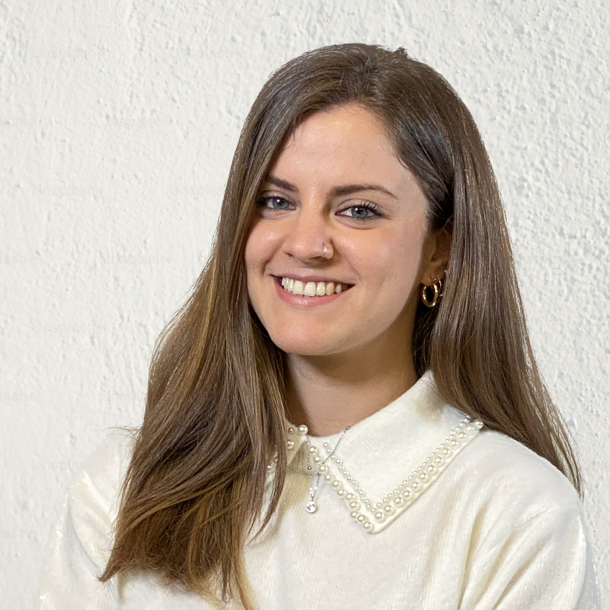

Design Manager — B2B industriale
Cinque anni di consulenza strategica su prodotti industriali complessi — manufacturing, machinery, retail tech. Oggi verso un ruolo in-house.

Negli ultimi 5+ anni ho lavorato come Design Manager in consulenza strategica per clienti B2B in contesti complessi e regolamentati — manufacturing, mobility, packaging — entrando spesso su progetti senza requisiti chiari e restando abbastanza a lungo da trasformarli in sistemi e relazioni che durano: da un singolo Panel Design a una Design Library completa, da un benchmark di mercato a un Design System di Gruppo.
Ho gestito budget con margini di efficienza tra il 30% e il 40%, mantenuto la fiducia del cliente anche nei passaggi di team più delicati, e oggi porto questa esperienza verso un ruolo in-house, dove voglio applicare lo stesso metodo a un solo contesto, in profondità, nel tempo.
Metodo
I progetti nascono in contesti diversi — food processing, macchine industriali, retail tech — ma condividono lo stesso punto di partenza: requisiti non ancora chiari, stakeholder multipli, ambiguità da strutturare prima di poter progettare qualsiasi cosa. In ognuno il lavoro segue la stessa logica: capire a fondo il contesto, introdurre un framework che lo renda gestibile, guidare il team e il cliente attraverso di esso, misurare il risultato con numeri verificabili.
Discovery, ricerca sul campo, interviste, benchmark di mercato. Prima di progettare, mappare come funziona davvero il business e cosa fa il resto del settore.
Framework condivisi, risk map per livelli di fedeltà, processo a sprint. Rendere il contesto gestibile e leggibile da tutti, design e sviluppo.
Leadership sul processo, prioritizzazione esplicita, decisioni prese con il cliente e non al posto suo. Un solo punto di riferimento tra i filoni di lavoro.
Budget consumato, tempi rispettati, scope consegnato. Ogni progetto si chiude con numeri verificabili, non con impressioni.
Quattro case study selezionati — clicca per aprirli
Tutti i progetti sono coperti da accordi di riservatezza. I clienti sono descritti per tipologia, settore e fascia di fatturato, senza nomi né dati identificativi, e per lo stesso motivo non sono incluse immagini di interfacce o materiali di progetto.
Multinazionale enterprise · Food processing
5 anni di relazione, budget gestito al 30-35%.
Gruppo industriale multi-brand · Machinery
4 anni di relazione, budget rivisto utilizzato al 72% nonostante una sospensione contrattuale.
Azienda manufacturing · Macchine utensili
Progetto chiuso al 76% del budget stimato.
Azienda enterprise · Retail tech
45 funzionalità candidate ridotte a 11, 27 schermate disegnate in 8 settimane.